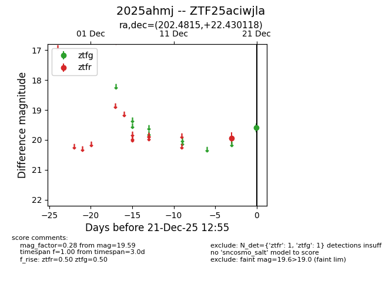
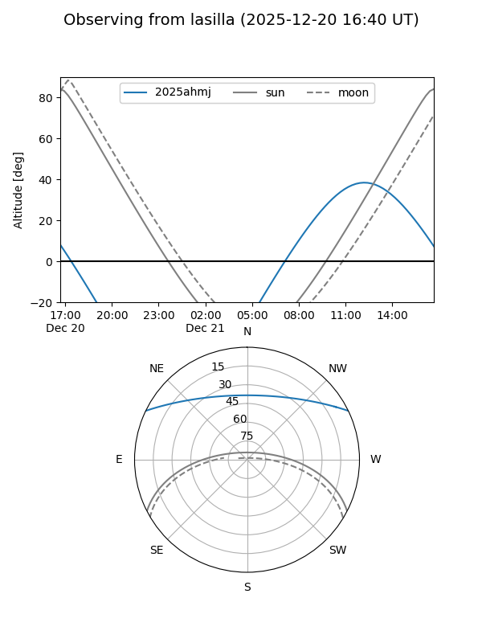
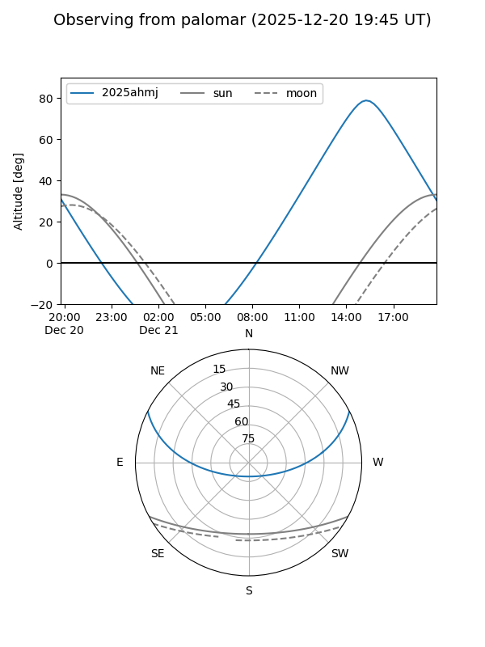
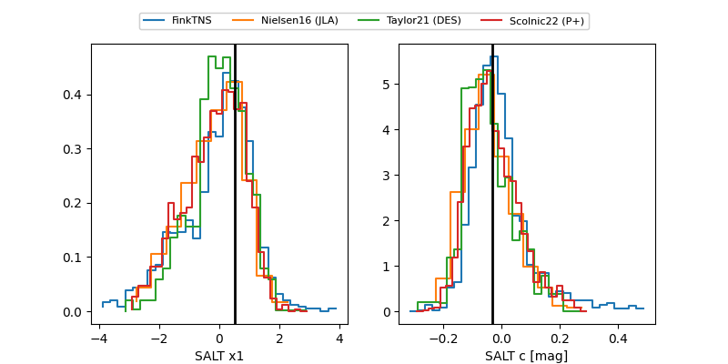

2025ahmj
Target 2025ahmj at 2025-12-18 20:02
Aliases and brokers:
FINK: fink-portal.org/ZTF25aciwjla
Lasair: lasair-ztf.lsst.ac.uk/objects/ZTF25aciwjla
ALeRCE: alerce.online/object/ZTF25aciwjla
TNS: wis-tns.org/object/2025ahmj
YSE: ziggy.ucolick.org/yse/transient_detail/2025ahmj
alt names
ZTF25aciwjla (ztf,fink_ztf)
2025ahmj (tns,yse)
Coordinates:
equatorial (ra, dec) = 202.4815,+22.43012
equatorial (HMS+DMS) = 13:29:55.56,+22:25:48.43
galactic (l, b) = (6.7463,+80.08583)
Flags:
Photometry:
last ztfr=19.94
1 ztfr detections
Lightcurve

Visibility


Additional plots
